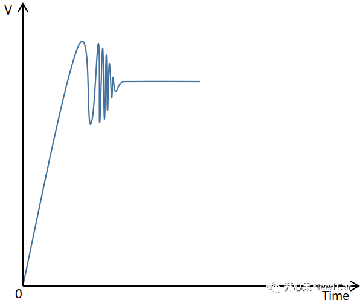

开心果 Need Car · 2021-10-05T14:17:00+08:00 · 微信原文
前言
诊断功能开发中，针对不同的诊断故障会有不同的诊断开启条件。开发人员（包括我自己）拿到需要求后，往往直接按照需求开发（赶项目交付时间），而少有时间思考需求为什么这样定。本文基于实际开发中通信诊断监控开启条件谈一下个人理解。
通信诊断功能的开启条件（monitor）因项目而异，一般来说会有如下几个条件：
诊断电压满足需求（一般定义诊断电压9-16V）
网络启动满足一定时间（如网络开启1s以后）
特定信号满足需求（如Power ON有效）
通信非BusOff状态
硬件设备的稳定工作，一般都会规定一个电压范围，在此范围内设备才能达到最佳状态。对于汽车中的诊断监控功能也不例外，这里注意一下，不同等级的ECU（Classs A/B/C）对应的监控电压可能有所不同。
为什么通信诊断功能开启要达到一定的电压范围才能开启诊断功能监控呢，ECU一上电就开始监控不可以吗？这里说一下个人理解，不同的DTC会对应不同的等级，也就是诊断优先级，说白了就是不同故障发生时，优先高的故障会优先处理。相对来说，电压故障优先级会高一些，当其他故障监控使能依赖于电压时，如果电压不满足条件则此类故障将不被处理，即不监控此类故障。举例：通信相关的故障监控使能条件依赖诊断电压，只有诊断电压满足需求范围，才能监控对应的通信故障。过压或者欠压均需要上报电压故障，而不再上报通信故障，不然去4S店维修又怎么能准确的判断车子的故障呢。
二：网络启动满足一定时间
对于通信故障的上报使能条件中一般会要求ECU上电一段时间或者网络开启一段时间后，通信相关的故障监控使能。为什么会有这样的要求呢？说到本质上，之所以会规定一段时间还是和电压相关。

如上图所示，当ECU上电时（一般指KL15上电），电压的稳定需要一段时间，如果采样过快，或者说在“振铃”阶段采样，获得电压并不准确，如果此时采样到一个电压值满足诊断电压范围，同时开启通信故障的监控将会影响诊断功能的鲁棒性。再者，如果通信诊断过快开启，其它节点的报文还未有外发，当前节点会认为存在节点丢失故障，进而上报故障，而实际是其它节点还未达到一个稳定状态，上报故障就显得有点“着急”。
三：特定信号满足需求
在实际的开发过程中，会要求某些信号满足一定条件才能开启通信诊断条件，如收到有效的Power ON信号（一般指Power信号处于Crank/Run状态且有效（valid））。为什么要增加这样的条件呢？一个操作循环在不同的项目中可能会有不同的定义，多数通信诊断的操作循环会定义Power ON->Off->On为一个操作循环，只有在操作循环开启时才会设置对应故障的Status Bit（每个项目使用的Status bit可能不同）。
四：通信非Busoff状态
通信相关的诊断只有在非Busoff条件下才能监控，这个先对好理解一些，因为在节点处于Busoff条件下，节点已经与总线断开了连接，即无法正常的收发报文，如果此时依然监控节点，则会不断的存储通信相关的故障(没有收到报文)，因此，此种情况下需要关闭节点的通信监控，避免故障的上报。